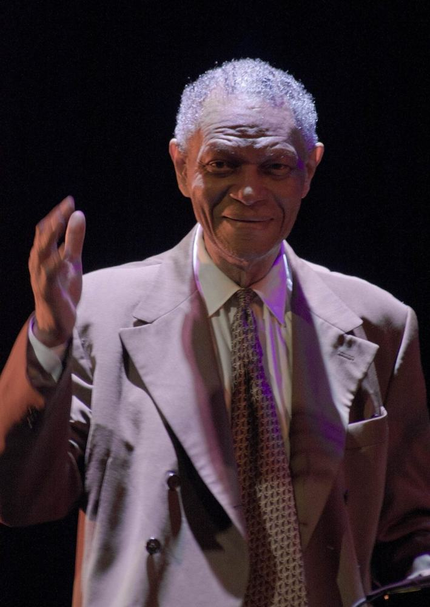

故事
1966 年，她坐進了丈夫樂團裡的鋼琴位置。她是 Alice Coltrane，1937 年生在底特律。她從小在教會彈琴，後來去了巴黎，跟 Bud Powell 學過爵士。
六十年代初，她在一個四重奏裡認識了 John Coltrane。1965 年，兩人結婚。隔年，她接替 McCoy Tyner，成為柯川樂團的鋼琴手。

1967 年柯川過世，她開始用自己的名字發唱片。她後來彈起豎琴，把印度音樂的味道帶進爵士。下次聽到爵士裡的豎琴，想想這位從鋼琴椅上走出來的人。
這篇的完整版是〈深夜場〉會員內容
加入會員看完整版：全部故事全文、展品完整說明與先聽一首、十個聲音示範、每週導聆課、台北爵士週報。
看會員方案一分鐘影片版在 Instagram @jazz101tw。